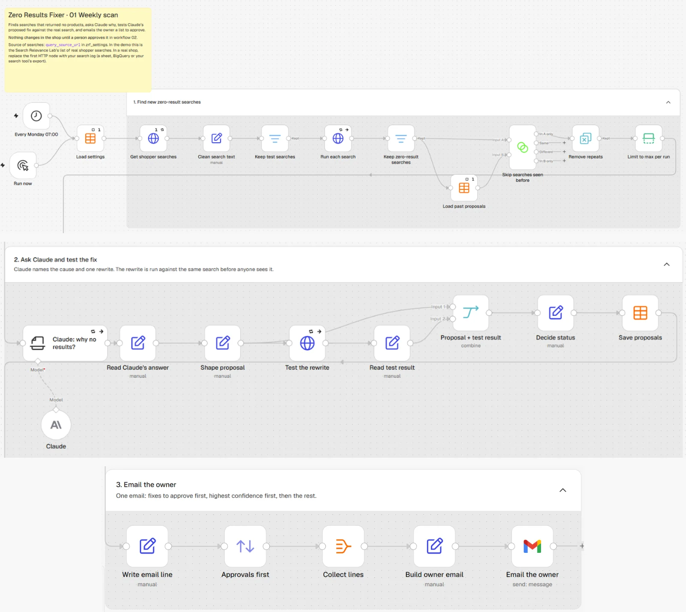
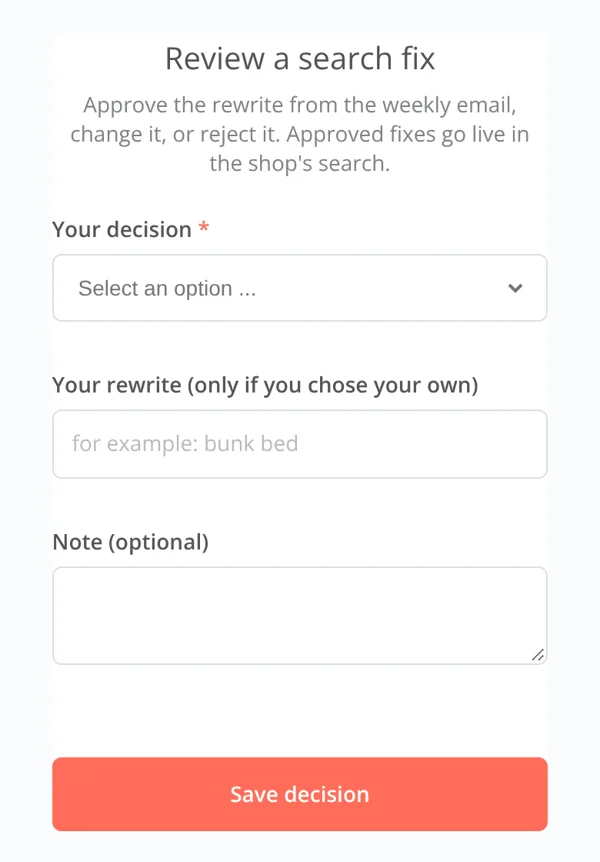

How it works
- Every MondayFindRun last week's searches and keep the ones with no results
- ClaudeExplainCause (spelling, wording, brand, too specific, not sold) and one rewrite
- AutomaticTestRun the rewrite. Drop it if it still finds nothing
- EmailAskTested fixes, products found, one review link each
- PersonDecideApprove, edit or reject. One decision per link
- APIPublishApproved rules served as JSON for the shop's search
Nothing changes in the shop until a person approves it. Claude's confidence only sets the order of the list.

The starting point
The demo runs on my Search Relevance Lab, which uses the open WANDS dataset of 42,994 furniture products. With strict keyword search, 60 of its 192 test searches (31%) return no products. Examples are a collection name with a number ("gurney slade 56"), a misspelling ("bunk beds cool desins"), a coupon question ("promo codes or discounts") and a single unknown name.
Product calls
The AI suggests, a person approves
A wrong rewrite would change what every shopper sees for that search. So every fix waits for a person. The approval rate then measures how good the suggestions are.
Test before asking
Each rewrite is run against the same search before the owner sees it. Fixes that still return nothing never reach the review list, so the owner's time goes only to fixes that work.
One decision per link
Review links carry a single use token, and a proposal can be decided only once. Testing two simultaneous clicks on one link found a real bug in the first build, where both decisions were saved. The save now checks the status itself.
Rules as an API
Approved rules are published as JSON for the search to read. The workflow never needs write access to the search engine, and switching it off is one setting.

First live run
On 20 November 2026 the workflow ran on n8n Cloud with the real Claude over all 60 empty searches.
| Result | Searches |
|---|---|
| Fix proposed, tested, returns products | 46 |
| Fix still returned nothing (not sent for approval) | 2 |
| Not sold or not a product search | 7 |
| Claude failed (sent for manual review) | 5 |
Returning products is a low bar, so I scored the 46 fixes against Search Relevance Lab's human relevance labels. I compared them with a simple fix that uses no AI: keep the shopper's words, but let any word match.
| Fix | Mean nDCG@10 | Top 10 labelled |
|---|---|---|
| Claude rewrite | 0.566 | 68% |
| Any word search (no AI) | 0.642 | 83% |
The simple fix beat the AI fix on this catalogue
Claude's rewrite scored higher on 9 searches, lower on 18 and the same on 19. Four fixes that read well scored 0, for example "star wars rug" to "rug".
Part of the gap is measurement
Claude's rewrites return more products nobody labelled, and those count as zero. The same bias showed up for semantic search in Search Relevance Lab.
Use both
Relax the match rule for every search, and send only the searches that still fail to Claude. That is the next test.
What I learned: compare an AI feature with the cheapest fix without AI before shipping it. Read one by one, every rewrite looked reasonable.
Every search and score is in the repo (docs/data/live-run-2026-11-20.csv). The 19 workflow tests also passed in a local n8n with test versions of Claude and email. Limits: one catalogue, rules match a search exactly, and the review form cannot show which search it belongs to (the email does).